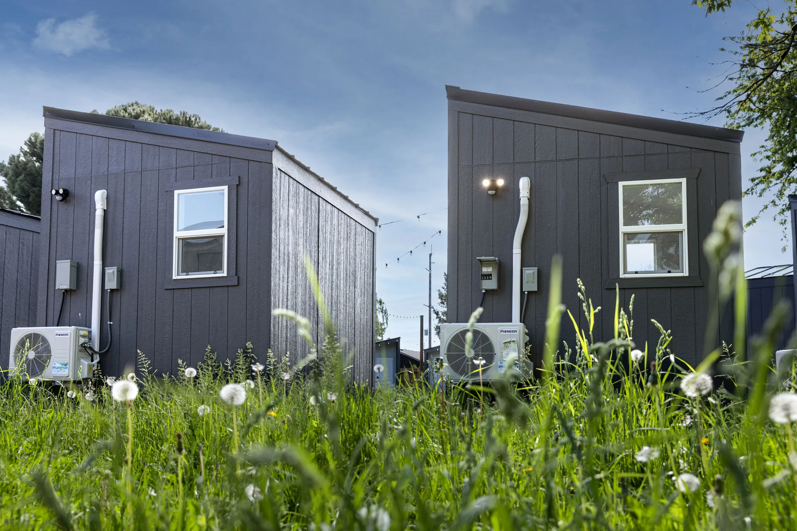

Providing housing to the homeless reduces costs for municipalities. The long-term viability of tiny houses for homeless people is entirely dependent on the structure and sustainability of the model. Benefits of access to housing include privacy, storage, safety, restoration of dignity, and stability. For cities such as Chicago, tiny houses are seen as an appealing option to close the gap in housing availability
05
The Implications
Tiny houses became an affordable option for individuals who lost their homes as a result of financial hardship. With their low cost and relatively easy construction, tiny houses have been adopted as shelters for the homeless in Eugene, Oregon; Olympia, Washington; Ithaca, New York; and other cities. Communities of tiny houses offer residents a transition towards self-sufficiency. Communities such as Othello Village in Seattle, Washington, originally lacked electricity and heat. In Seattle, non-profits have stepped in to help provide amenities
Tiny homes are also utilized for disaster relief housing, and one such design was developed in the late 2010s in Florida. It was intended for disaster relief housing, and was designed to handle hurricane-force winds. There are a number of non-profit that specialize in using tiny homes to provide housing in disaster areas. An example of this, is 80 plus year old cancer patient that was given a $20,000 tiny home after Hurricane Helene destroyed is home in 2024.
